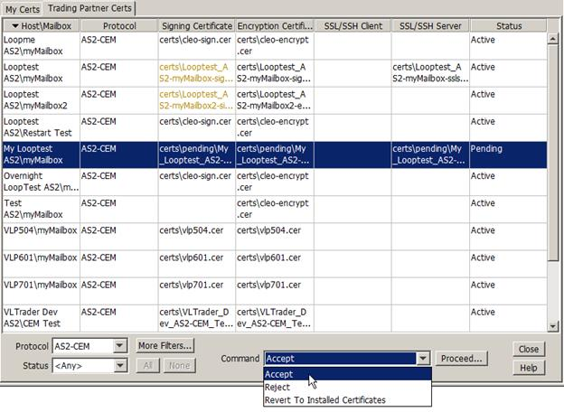
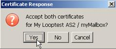
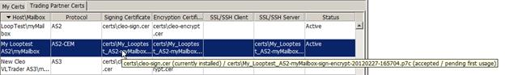

| Certificate Management / Exchanging Certificates with Your Trading Partner | |
After a new Certificate Request has been received by your trading partner and auto-accept has not been enabled (see Auto-Accepting Inbound EDIINT CEM Requests), the pending certificates can be viewed by either right-clicking on the individual partner's record and choosing the Display option, or by double-clicking on the partner record. A panel showing all active and pending certificates is displayed.
After viewing the newly-received certificates, you can choose to either Accept or Reject any or all the received certificates by selecting the partner record in the Trading Partner Certs panel, invoking the desired command option and then clicking Proceed...:

If you choose Accept, you will be given the option to accept any or all of the pending certificates. (Likewise, if you choose Reject, you will be given the option to reject any or all of the received pending certificates.)

If the certificates are accepted, the old encryption, SSL client and SSL server certificates (if applicable) will be archived in the certs\archive directory and the newly received certificates will be installed and activated and the status of the partner record will be set to Active.
